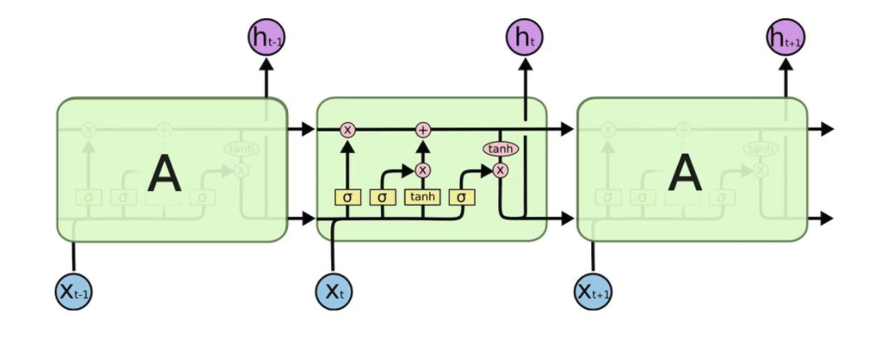
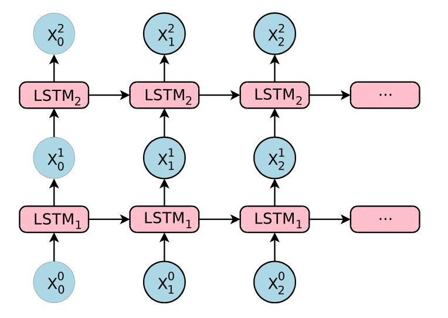
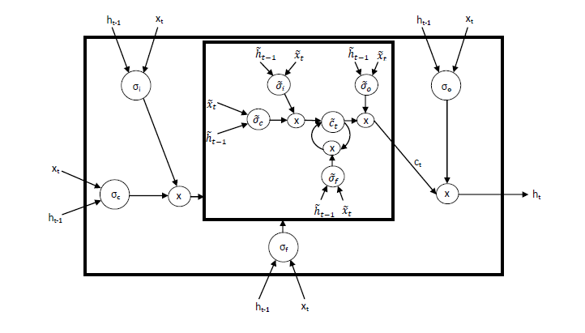
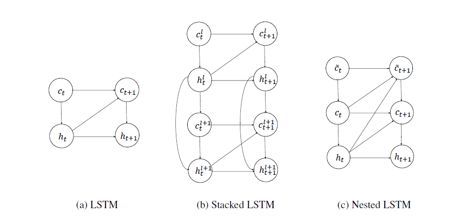

Nested LSTMs
摘要：最近，一种新的 Nested LSTMs 网络被提出。在通常的LSTM网络中，我们通过将LSTM单元堆叠，从而形成深度RNN网络，提高其效果；Nested LSTM则通过嵌套而不是堆栈来增添LSTM的深度。在NLSTM中，记忆单元的值是由LSTM单元计算的，其中，LSTM单元具有自身内在的记忆单元。具体而言，NLSTM记忆单元并不是按照等式：$ct^{outer} = f_t \odot c{t-1} + it \odot g_t$ 对（外部）记忆单元的值进行计算，而是使用级联：$(f_t \odot c{t-1}, i_t \odot g_t)$ 将其作为内部LSTM（或NLSTM）记忆单元的输入，并设定 $c_t^{outer} = h_t^{inner}$。在访问内部记忆时，Nested LSTM 相比传统的堆栈 LSTM 有更高的自由度，从而能处理更长时间规模的内部记忆；实验也表明，在参数数量相似的情况下，NLSTM 在多种任务上都超越了堆栈 LSTM。作者认为Nested LSTM 有潜力直接取代堆栈 LSTM。
1. Introduction
学习长期的依赖关系是当前人工智能领域中，尤其是在nlp领域，机器学习方法的关键性挑战。基于循环神经网络的体系结构已经在使得机器能够模仿这种能力方面取得了显著进展。
single-layer LSTM

RNN的输入是以当前的状态为依据，适合学习时间上的抽象特征。在实践中，许多专家已经证明，更为复杂的体系结构是解决许多任务的关键。其中一个原因是梯度消失问题（Hochreiter于1991年、Bengio等人于1994年提出），它使得简单的RNN难以学习长期依赖关系。Hochreiter和Schmidhuber于1997年提出了LSTM，包含能够改善梯度消失问题的记忆机制。单层LSTM如上图，图中的三个单元实际上是同一个单元，它循环地将内部的参数传递给自己。
Stacked LSTMs

堆栈 LSTM 架构使用一系列 LSTM 一层层地堆叠在一起来处理数据，一层的输出成为下一层的输入。上图为一个两层的LSTM网络。
引入多层的结构，即将多个LSTM单元堆叠，每一层的输出成为下一层的输入。 每层处理我们希望解决的任务的一部分，并将其传递给下一层。额外的隐藏层可以添加到多层感知器神经网络，使其有更深入的“理解”。 额外的隐藏层被认为重新组合了来自先前层的学习表示，并在高度抽象层次上找到新的表示。 例如，从线条到形状到对象。
Nested LSTMs
在 NLSTM 中，LSTM 的记忆单元可以访问内部记忆。相比于传统的堆栈 LSTM，这一关键特征使得该模型能实现更有效的时间层级。在 NLSTM 中，外部记忆单元可自由选择读取、编写的相关长期信息到内部单元。相比之下，在Stacked LSTM 中，高层级的激活（类似内部记忆）直接生成输出，因此必须包含所有的与当前预测相关的短期信息。换言之，Stacked LSTM 与Nested LSTM 之间的主要不同在于，NLSTM 可以选择性地访问内部记忆。这使得，即使这些事件与当前事件不相关，内部记忆也能够记住、处理更长时间规模上的事件。我们在后面一章更详细地介绍它。
2. Model of Nested LSTMs
LSTM 中的输出门会编码可能与当前的时间步骤不相关，但是仍然值得记忆的信息。Nested LSTM 根据这一直观理解来创造一种记忆的时间层级。以同样的方式被gate控访问内部记忆，因此长期信息只有在情景相关的条件下才能选择性地访问。

The architecture
在 LSTM 网络中，单元状态的更新公式和门控机制可以表示为以下方程式：
Nested LSTM 使用已学习的状态函数 $ct = m_t(f_t\odot c{t−1}, it \odot g_t)$ 来替代 LSTM 中计算 $c_t$ 的加运算。我们将函数的状态表示为 m 在时间 t 的内部记忆（inner memory），调用该函数以计算 $c_t$ 和 $m{t+1}$。我们可以使用另一个 LSTM 单元来实现该记忆函数，就生成了 Nested LSTM。同样，该记忆函数能够由另一个 Nested LSTM 单元替换，因此就能构建任意深的嵌套网络。
因此，我们得到NLSTM 中记忆函数的输入和隐藏状态：
注意如果记忆函数是加性的，那么$ct = f_t \odot c{c-1} + \sigmac (x_t W{xc} + h{t-1} W{hc} + bc) = \tilde{h}{t-1} + \tilde{x}_t $，整个系统将退化到经典的 LSTM。

LSTM、Stacked LSTM 和 Nested LSTM 的计算图形。隐藏的状态、外部记忆单元和内部记忆单元分别由h、c和d进行表示。虽然当前的隐藏状态可以直接影响下一个内部记忆单元的内容，但内部记忆只有通过外部记忆才能够影响隐藏状态。
现在，外部 LSTM 的单元状态更新方式为 $ ct = \tilde{h}{t} $ 。
3. Experiments
见附件论文[1]
4. Conclusion
Nested LSTM（NLSTM）是LSTM模型的简单扩展，通过嵌套来增加深度，而不是通过堆叠。 NLSTM的内部存储器单元形成内部存储器，其仅通过外部存储器单元被其他计算元件访问，实现了时间层级的形式。
论文[1]的实验表明，在相似的参数设置下，Nested LSTM 在多种字符级语言建模任务中的表现都超越了Stacked LSTM和single-layer LSTM，并且和Stacked LSTM 的高层级单元相比，LSTM 的内部记忆可以学习更长期的依赖关系。
Bibliographies
[1] Moniz, Joel Ruben Antony, and David Krueger. “Nested LSTMs.” Asian Conference on Machine Learning. 2017.
[2] Hochreiter, Sepp, and Jürgen Schmidhuber. “Long short-term memory.” Neural computation 9.8 (1997): 1735-1780.